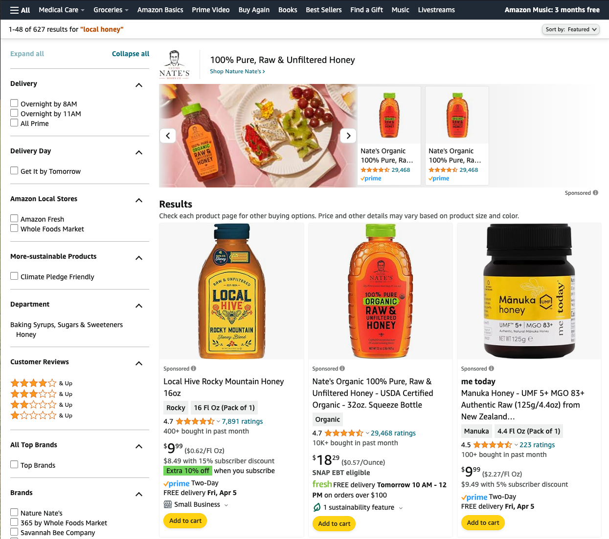
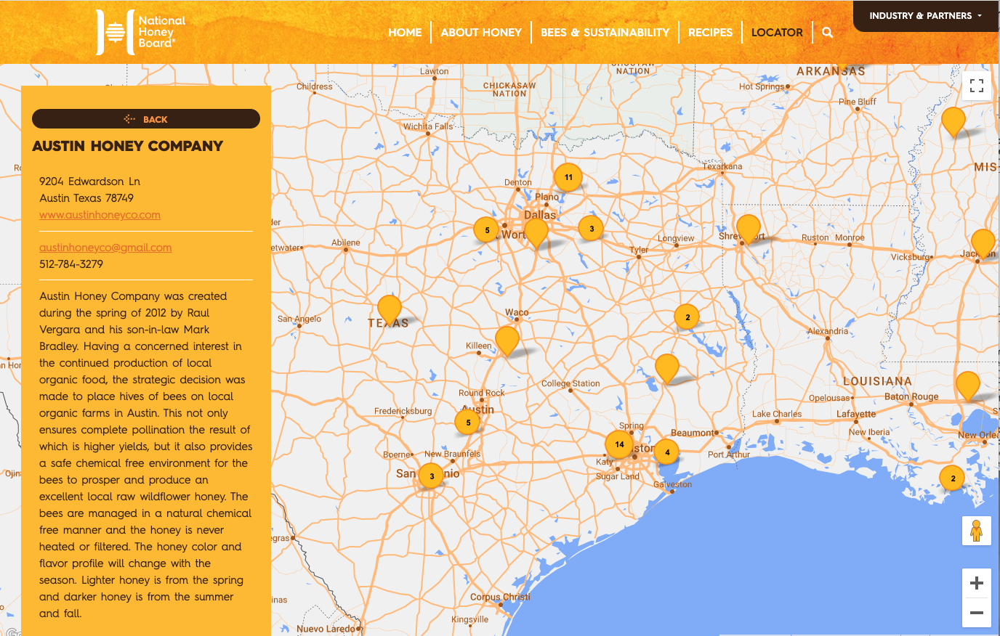
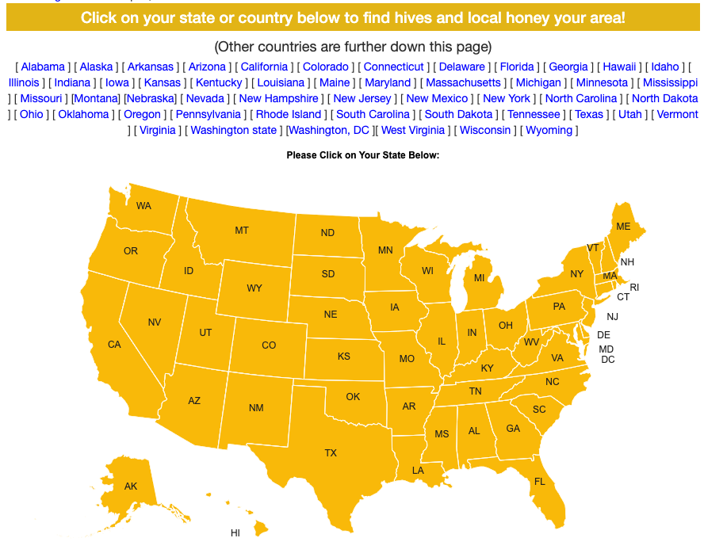
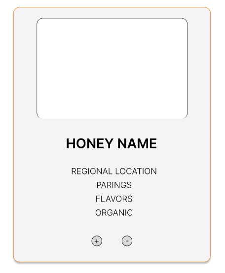
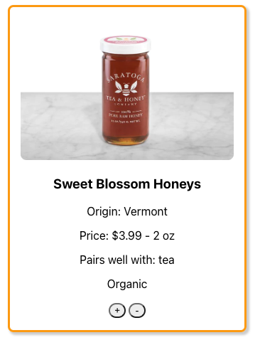
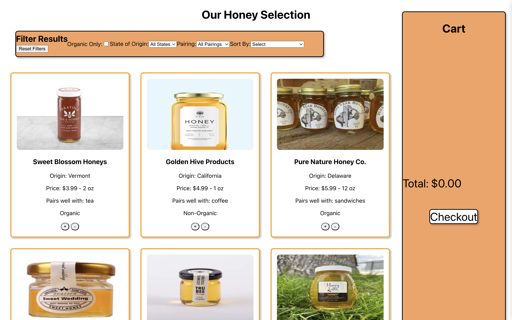

Making Reactive Sites
I have made a few different design webpages, yet I think its time I take it up a notch. I need to work on dynamic websites.
I want this project to ultimately culminate in a sortable, filterable webpage with some sort of interactable aggregate.This journal entry will start with a idea generation, then move to a competitve analysis, and proceed to a development summary.
Getting Started
There are plenty of different websites I could make that fullfil the requirments. When quickly listing some rough ideas I was able to come up with:
- Movies
- Groceries
- Hotels
- Bakery
- Honey
- Podcasts
- Diverse-owned goods
Now, I know one of those is very different then the rest, but I think that is where it really shines. I should say that I am a beekeeper. This means that I know a bit about the industry and the major honey producers. The industry is full of a few massive companies and then many mom and pop shops.
I thought it could be interesting to design a system to help people support the smaller producers. They both have better a better product and usually struggle to find customers—and end up giving away a lot of honey as gifts.
But, local honey is great. It can help people with their seasonal allergies, and often is made up of many more pollen sources than the big producers. These hints of flavor make the taste of the honey more complex and make it pair well with certain food groups.
So, I wanted to theme my aggregator and list to be based on a market place for small producer's honey.
The Compititon
In order to best understand how my website can shine, I need to look at the current methods that exist. I want to start with a competitive analysis of the major multi-vendor sellers and create a feature comparison chart. For the sake of this project, I am just going to highlight three sellers but in a real scenario I would expand this to many more.
Before starting, I want to highlight the five factors that I will be judging these websites on.
- Intuitive
- Regional Breakdown
- Highlights Small Producers
- Educates Users
- Helpful Reviews/Comments
The three websites I chose to complete our competitve comparison chart with are 1. Amazon, 2. Honey, and 3. Local Honey Finder.
  The primary websites these ways differ is how they force the user to sort their products. Amazon gives the users many different factors that they can filter upon. The other two only really give the user the ability to search by geographic region. Amazon is product first; the other two are fitlering first.
Comparison Chart
| Feature | Amazon | Honey.com | Local Honey Finder |
|---|---|---|---|
| Reviews | ✅ | ❌ | ❌ |
| Intuitive Design | ✅ | ❌ | ❌ |
| Regional Breakdown | ❌ | ✅ | ✅ |
| Highlights Small Producers | ❌ | ✅ | ✅ |
| Educates Users | ❌ | ✅ | ❌ |
Comparison Chart Analysis:
I think this competitive analysis really outlined that there is a way to greatly expand upon the current options. No method is perfect. They either are convoluted / too geographically oriented. On the other hand, they are standard shopping methods not modified to take in consideration of honey’s nuances.
Amazon's most effective factors are its intuitive design and filtering system. However, it doesn't allow you to easily break down results by geographic origin. There is a clear heirarchy and design cohesion.
Honey's most effective factors are its massive map. Yet, there are now ways of easily buying the products on the website. It only redirects you. There is a map like interface which doesn't seem entirely cohesive to the shopping experience.
Local Honey Finder has similar problems. Additionally, it doesn't effectively educate the users on the nuances of honey's many details. It doesn't tell the user the specific pollon breakdown or flavor notes that honey.com can educate the user. It's work flow is unclear and will likely lead to the user having frantic mouse movement.
Starting to Redesign
Using this information, let's design the key features needed for this website:
1. A way of educating the user about each type of honey.
2. The ability to filter the honeys by pairings.
3. The ability to regionally organize the honeys.
4. The ability to sort by both price and ounce.
5. Understandable UI/UX that matches standard shopping behavior.
I believe these features will successfuly differentiate from the current alternatives.
The Design
Honey Item
The card for each honey product is the most important design for this project. So, I decided to use a fairly standard minimalist design. I wanted it to be professional and serious. The image should take up the top third of the image followed by some details and then an add button. I also went ahead and included a remove from cart button.
My primary colors were going to be white, black, and two shades of orange. This would keep the website looking sleek yet appropriately themed.
I ultimately settled on this design. I like the body text because it helps educate the user on what to look for in their honey. I think the drop shadow gives the card a feeling of clickability. To further this I added some hover effects on the sub-buttons.
This was the figma mock-up that I made for the default honey card. I then translated it into the following in html and css:
Final Website Mockup
This is the final version of the mock up website. It is fully interacable and sortable. Please check it out at https://honey-site-green.vercel.app/
Conclusion:
In the end I like how the website turned out. I do think the cart could use some work, but the main purpose of this project was not visual design but product design. This website has all of the features that the competitve analysis determined it should. Specifically, it is both intuitive and contains the ability for geographic breakdown. I also added a feature, so users can sort by organic honeys. Lastly, the user can also filter by pairings to better select their ideal honeys.
This project also taught me a ton about react and how interacable websites can be created. The website is also scores a 97 percent for accessibility which is always fantastic!